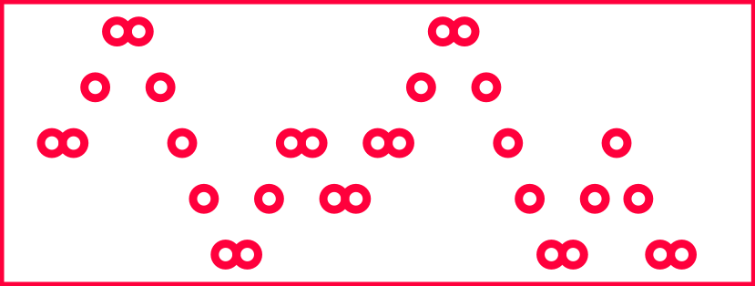

In order to store the songs in mechanical memory, specifically a song sheet that marbles can drop into, we need a program that can automatically turn a MIDI file into a song sheet of appropriate proportions that can fed into the machine. Without a good program, we would be stuck manually adding holes to a song sheet for hours, most likely with a high degree of human error.
So, using the python libraries MIDO and svgwrite, we designed a program to go through a desired midi file and generate an SVG file with hole placement corresponding to the notes of the song.
Initially, the logical way to encode notes into the sheet is to have one hole slot per note. Every time a note gets played in the song, a corresponding hole is put in the cutsheet. This is helpful, but suppose we want to play a song on a full octave, 13 notes, and we want to play a minute, feasibly 100 notes. That makes the length of the song sheet over 10 times the width and with ¼ inch marbles 25 inches long (not including any margins we would want on the sheet). That is already longer than a full sheet that would fit onto a laser cutter bed. So we have too much length on the song sheet to a small amount of width.
To resolve this problem we cut holes in a honeycomb pattern as shown below. With this design we have two holes per note which works better with the thickness of our pipes. This doubles the width of the sheet while cutting the length in half.
This program needs to integrate flawlessly with a mechanical system with parameters stored elsewhere, so we needed to account for:
Hole Size
Space Between Holes
Line Thickness
Horizontal Border Space
Vertical Border Space
Length of Notes
Note Range
Number of Notes to Include
Placement of Notes
Here is an excerpt from Ode to Joy without a honeycomb pattern and a 5 note range.
>
Here is Megalovania with a honeycomb pattern and a full octave range.
>
Finally here is a cut out sheet with the racks added on the sides.
>
If you want to explore more of our MIDI code, checkout the github repo here.
Stepper Code:
The control for the stepper and DC motors was trivial. We used a transistor along with analog output from the arduino to control the DC motor. For the stepper we imported a stepper library
found here to send input to the motor drivers to modulate speed. The code we used can be found here.